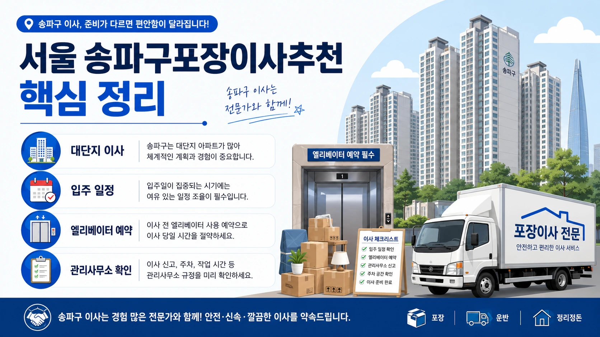
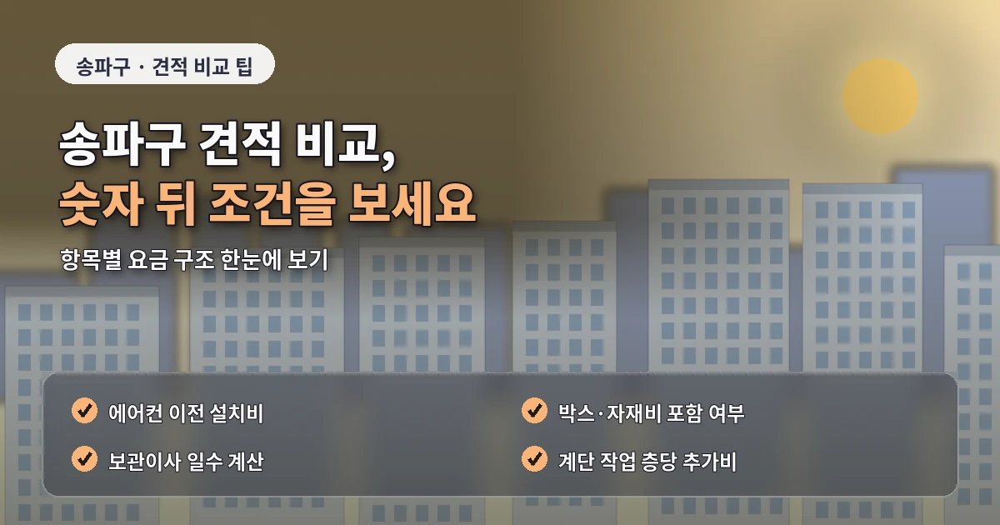
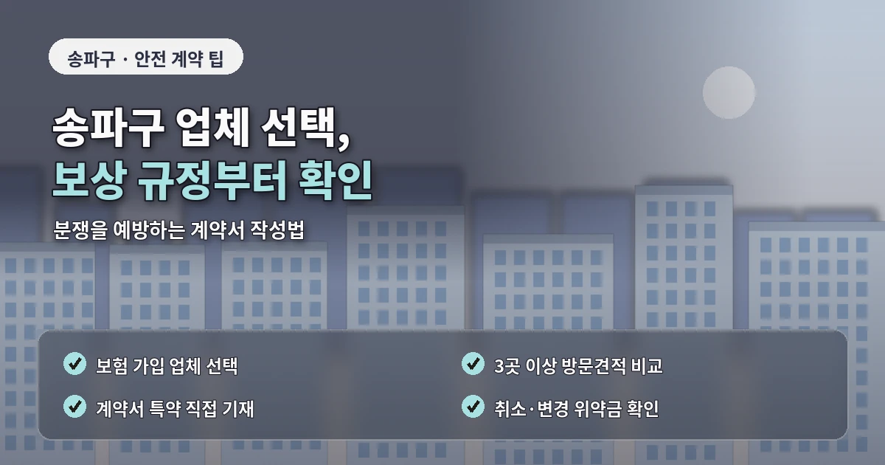

서울 송파구포장이사추천 입주단지 견적 전략
송파구 포장이사는
대단지 아파트와 신축 입주 단지가 많아
일정 조율과 관리 규정 확인이 중요합니다.
잠실동은 대형 아파트 단지와 고층 주거지가 많고,
문정동은 신축 오피스텔과 업무지구가 함께 있으며,
가락동과 방이동은 아파트와 주택가가 섞여 있습니다.

송파구 포장이사 비용은
평수와 짐의 양 외에도
엘리베이터 예약,
주차장 진입,
사다리차 가능 여부,
관리사무소 보양 기준에 따라 달라질 수 있습니다.
견적을 좌우하는 현장 조건
대단지 아파트는
이사 가능 시간이 정해진 경우가 많습니다.
엘리베이터 예약이 늦어지면
원하는 날짜에 작업을 진행하기 어렵고
업체 일정도 맞추기 힘들 수 있습니다.
이사 날짜가 정해지면
관리사무소 예약부터 확인하는 것이 좋습니다.
잠실동이나 문정동처럼
고층 건물이 많은 지역은
사다리차 사용 가능 여부를 미리 확인해야 합니다.

단지 구조나 도로 여건상
사다리차 설치가 제한될 수 있고,
엘리베이터 운반으로 진행해야 하는 경우도 있습니다.
업체 선택 전 확인할 기준
송파구 포장이사 업체추천을 볼 때는
대단지 작업 경험과 입주 일정 대응 능력을 확인해야 합니다.
동시 입주나 이사 수요가 많은 날에는
시간 관리가 특히 중요합니다.
작업 인원이 충분하지 않으면
정해진 시간 안에 작업을 마치기 어렵고
다음 예약에도 영향을 줄 수 있습니다.
포장이사 비교견적은
같은 조건으로 문의해야 합니다.
출발지와 도착지의 층수,
엘리베이터 사용 시간,
주차 가능 위치,
사다리차 여부,
가구 분해 조립,
가전 이동 조건을
모든 업체에 동일하게 알려야 합니다.
비용만 낮은 업체를 선택하기보다
견적서에 포함된 서비스 범위를 확인해야 합니다.

추가비용을 줄이는 준비 방법
포장재,
옷장 박스,
주방 정리,
바닥 보양,
가구 보호,
파손 보상 기준이
명확하게 안내되어야 합니다.
송파구는 가족 단위 이사도 많아
짐의 종류가 다양하게 나오는 경우가 많습니다.
책, 의류, 주방용품,
아이 물건, 대형가전이 섞이면
박스 수와 작업 시간이 예상보다 늘어날 수 있습니다.
이사 전 방별로 짐을 정리하면
상담도 정확해지고
도착지 배치도 훨씬 수월해집니다.
계약 전에는
일정 변경 조건과 취소 규정도 확인해야 합니다.
입주 날짜와 잔금 일정,
관리사무소 예약이 연결되는 경우가 많아
작은 일정 변경도 비용 문제로 이어질 수 있습니다.
계약 전에 확인할 세부 항목
송파구 포장이사는
대단지와 신축 입주 조건을 반영한
정확한 견적 비교가 핵심입니다.
비용, 견적, 업체추천을 볼 때도
작업 시간, 보양 기준, 차량 동선,
엘리베이터 예약을 함께 확인해야
이사 당일 혼선을 줄일 수 있습니다.
송파구 포장이사에서
도착지 입주 가능 시간은 꼭 확인해야 합니다.
신축 입주 단지는 같은 날 여러 세대가 움직이는 경우가 있어
엘리베이터와 차량 진입 시간이 세밀하게 나뉠 수 있습니다.
업체가 도착했는데 입주 시간이 맞지 않으면
대기 시간이 발생하고 전체 일정이 지연될 수 있습니다.
이런 상황을 막으려면
입주 가능 시간, 관리사무소 안내,
차량 진입 위치를 한 번에 정리해두는 것이 좋습니다.
또한 송파구는 단지 규모가 큰 곳이 많아
동 입구와 실제 세대까지의 이동 거리도 확인해야 합니다.
차량에서 엘리베이터까지 거리가 멀면
작업 시간과 인력 기준이 달라질 수 있습니다.
송파구 포장이사는 이사 일정이 다른 조건보다 먼저 정리되어야 합니다.
대단지와 신축 입주 단지가 많은 지역은
엘리베이터 예약이 빨리 마감될 수 있고,
같은 시간대에 여러 세대가 움직이면 차량 진입도 제한될 수 있습니다.
견적 상담 전 관리사무소에 가능한 시간대를 확인하면
업체와의 일정 조율이 훨씬 수월해집니다.
또한 잠실이나 문정처럼 고층 건물이 많은 지역은
사다리차 사용이 항상 가능한 것은 아닙니다.
도로 폭, 단지 구조, 조경 위치, 안전 기준에 따라
엘리베이터 운반으로 진행해야 할 수도 있습니다.
이 경우 작업 인원과 시간이 달라지므로 견적 단계에서 반드시 확인해야 합니다.
송파구 포장이사는 입주 일정과 업체 일정이 맞아야 안정적입니다.
관리사무소 예약 시간, 차량 진입 시간, 작업 시작 시간을 함께 정리하면
이사 당일 대기 시간을 줄일 수 있습니다.
작업 전 예약 시간을 다시 확인하면 일정 지연을 줄이는 데 도움이 됩니다.
이 작은 확인이 실제 비용 차이를 줄입니다.
자주 묻는 질문
A. 엘리베이터 예약, 차량 진입, 보양 규정, 작업 시간을 먼저 확인해야 합니다.
A. 건물 구조와 층수에 따라 달라지므로 업체와 관리사무소에 함께 확인해야 합니다.
A. 관리사무소 예약 시간과 업체 작업 시간을 먼저 맞춰두는 것이 좋습니다.